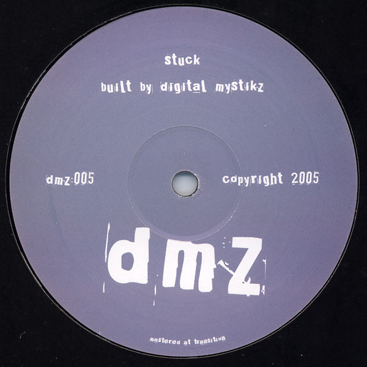
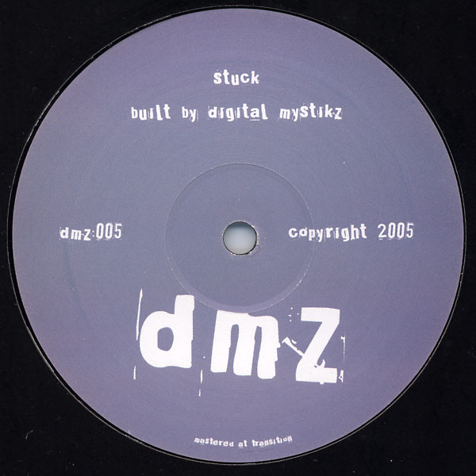

DMZ 005
 

Released in September 2006, DMZ005 brings two heavyweight cuts from Mala and Coki, known together as the Digital Mystikz. "Neverland," Mala's contribution to the lp, is a dark trip down the rabbit hole. Bucking genre conventions,
"Neverland" begins with sub heavy 808 kicks and an almost electro-esque drum pattern. The 'drop' comes in the form of a wistful, haunting melody from a broken wind instrument. Things get even darker in the breakdown, when a off kilter synth
melody sneaks into the track, taking the listeners to a dark place indeed.
By Comparison, Coki's "Stuck" seems almost playful, though there is plenty of darkness to be found in the synth pads and atmospheres. "Stuck" also features upbeat, scattered drums that betray the link between Dubstep and Garage, while the
warping bassline leaves no doubt as to who 'built' the track.
A: Digital Mystikz - Neverland
AA: Digital Mystikz - Stuck